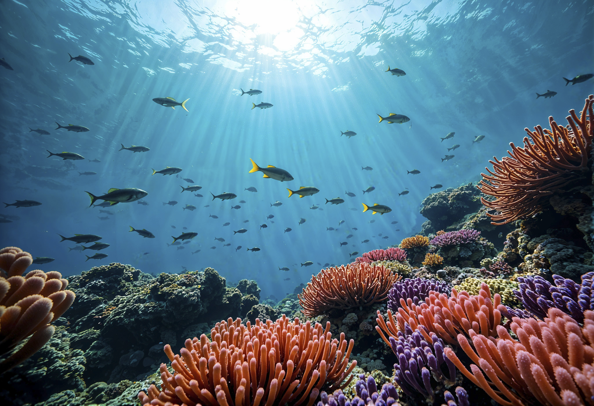
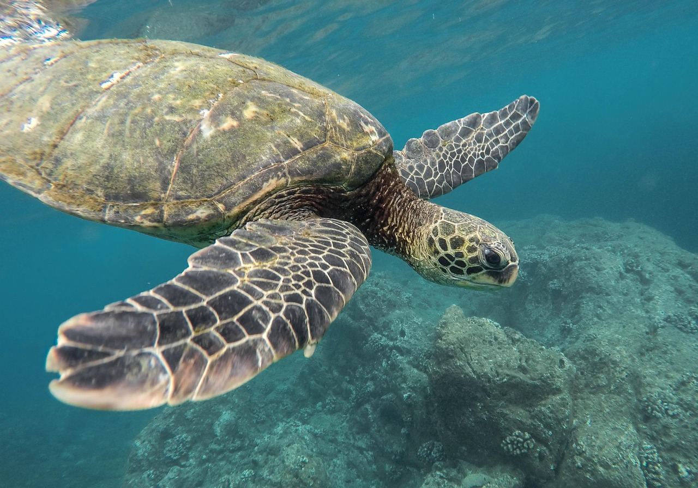
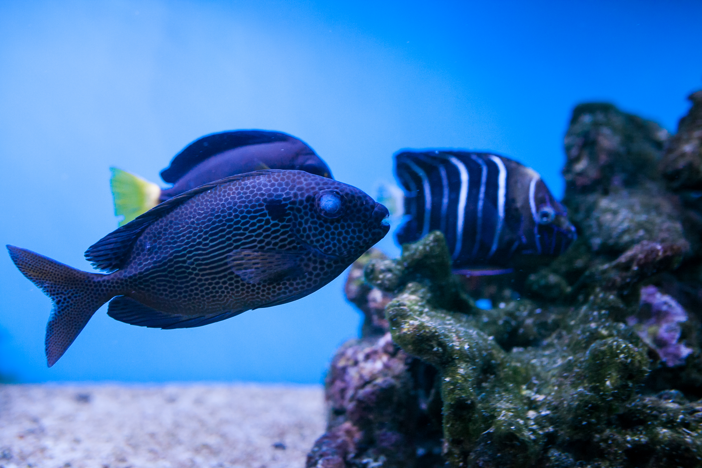
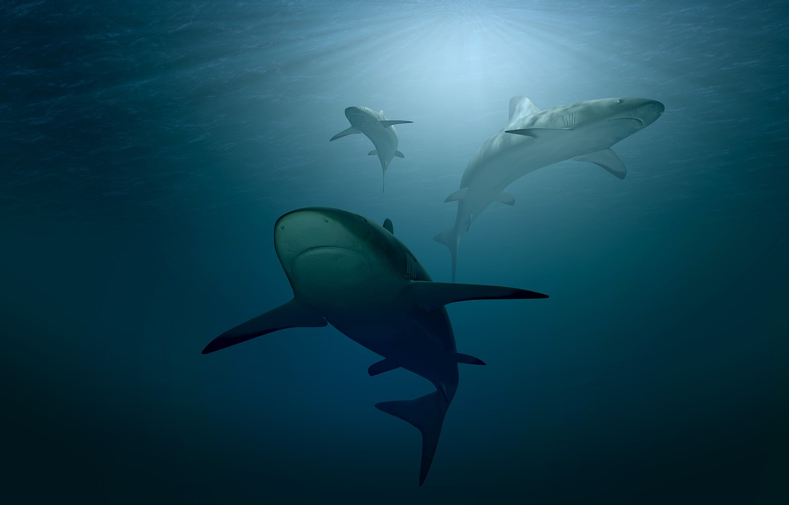

Preservar a Vida Marinha é preservar a Vida na Terra!🐋


🐟 Os oceanos geram mais de 50% do oxigênio que respiramos e absorvem grande parte do excesso de calor e do dióxido de carbono da atmosfera.


🐬 Organismos minúsculos como o fitoplâncton alimentam pequenos peixes, que por sua vez sustentam os grandes predadores.
- A consciência do ser humano é essencial na manutenção do nosso planeta!👌
- Atualmente, este ecossistema enfrenta sérias ameaças causadas pela atividade humana, incluindo a poluição por plásticos, as alterações climáticas e a pesca excessiva. Proteger os oceanos através de iniciativas como as áreas marinhas protegidas é fundamental para garantir não apenas a sobrevivência das espécies subaquáticas, mas também o futuro sustentável de toda a humanidade.